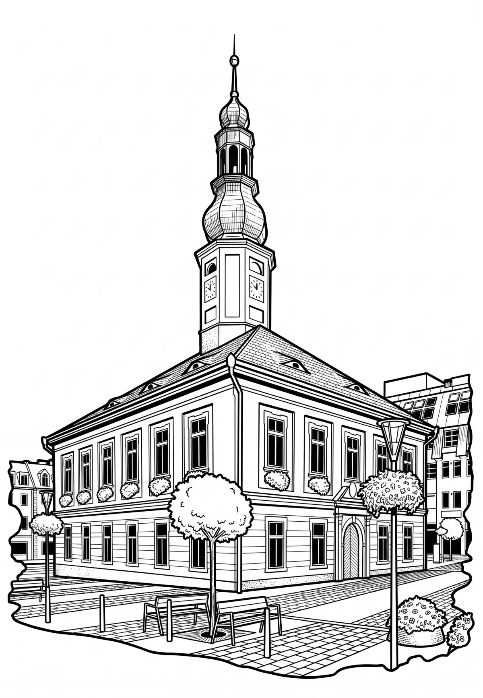

Jeseník
Olomoucký kraj · 432 m n. m.

město · #029
Jeseník (do roku 1947 Frývaldov, německy Freiwaldau) je okresní a lázeňské město v okrese Jeseník v Olomouckém kraji na soutoku Bělé a Staříče. Žije zde přibližně 10 tisíc obyvatel a výměra města je asi 38 km². Je největším městem v české části historického území Niského knížectví.